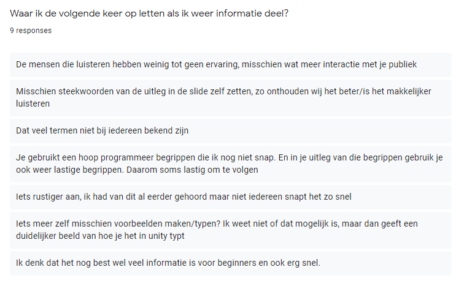

Sharing
3 EC's
Hoe kan ik anderen interesseren in het onderwerp dat ik presenteer.
Waar moet ik op letten als ik een onderwerp uitleg?
Uitvoering
Bewijsvoering
Uitvoering
Omdat we deze periode een game moesten maken en ik al een achtergrond in programmeren had, heb ik een presentatie gegeven over de basis van het programmeren. Hierna heb ik een document gemaakt met een tutorial over hoe je git gebruikt omdat er ongetwijfeld groepjes zijn die met meerdere personen gaan programmeren en dan is git erg handig om te gebruiken.
Hoe kan ik anderen interesseren in het onderwerp dat ik presenteer.
Leer-subdoelen
Welke factoren zorgen ervoor dat het publiek meer interesse toont?
Welke factoren zorgen ervoor dat het publiek minder interesse toont?
Activiteit
Ik heb halverwege de periode een presentatie gegeven over de basis van het programmeren. Ik had vernomen dat bij de programmeer community nog amper uitleg was gegeven over de basis van het programmeren dus had ik dat op mij genomen.
Uitkomst
De presentatie had een redelijke opkomst. Na de presentatie heb ik een Google Forms vragenlijst in de groep gegooid en deze heeft 9 reacties gehad. Er waren gemixte reacties over de presentatie maar vooral de verbeterpunten waren erg duidelijk.
Nadat ik deze feedback heb gehad ben ik bezig geweest met de tutorial over git. Met git kun je files op een snelle en efficiënte manier bestanden delen en je project updaten op 1 centraal punt. Ik heb ik dit tutorial document een geheel stappenplan beschreven van opstarten tot de dagelijkse workflow. Hier heb ik ook een feedback formulier voor gemaakt en deze heeft 5 reacties gekregen. Hier waren vooral positieve reacties op.
Reflectie
In de feedback van mijn presentatie was er een splitsing tussen de reacties. De ene helft was wel meer enthousiast geworden over programmeren en de voornaamste reden die zij noemden was mijn enthousiasme.
Om je publiek meer geïnteresseerd te maken is een positieve insteek vooral belangrijk. Als jij enthousiast bent dan geeft dat af op het publiek.
Maar de andere helft die minder enthousiast zijn geworden zeiden dat het vooral kwam doordat ik erg veel vaktermen gebruikte en dat daardoor het hele verhaal nog minder volgbaar werd en ze dus afhaakten.
Door het praten in vaktermen wordt mijn verhaal nog onduidelijker. Hierdoor haken veel mensen af en zakt de concentratie.
Waar moet ik op letten als ik een onderwerp uitleg?
Leer-subdoelen
Wat maakt mijn verhaal duidelijker?
Wat maakt mijn verhaal minder duidelijk?
Activiteit
Ik heb halverwege de periode een presentatie gegeven over de basis van het programmeren. Ik had vernomen dat bij de programmeer community nog amper uitleg was gegeven over de basis van het programmeren dus had ik dat op mij genomen.
Uitkomst
De presentatie had een redelijke opkomst. Na de presentatie heb ik een Google Forms vragenlijst in de groep gegooid en deze heeft 9 reacties gehad. Er waren gemixte reacties over de presentatie maar vooral de verbeterpunten waren erg duidelijk.
Nadat ik deze feedback heb gehad ben ik bezig geweest met de tutorial over git. Met git kun je files op een snelle en efficiënte manier bestanden delen en je project updaten op 1 centraal punt. Ik heb ik dit tutorial document een geheel stappenplan beschreven van opstarten tot de dagelijkse workflow. Hier heb ik ook een feedback formulier voor gemaakt en deze heeft 5 reacties gekregen. Hier waren vooral positieve reacties op.
Nu wil ik op de feedback over de duidelijkheid van mijn verhaal behandelen.
Reflectie
In het vorige leerdoel heb ik al behandelt dat het gebruik van vaktermen vooral zorgt voor meer verwarring. Dus het beste is om deze uit te leggen of om deze helemaal te vermijden.
In het geval van een presentatie over programmeren zorgt een grote lap code in je presentatie zetten ervoor dat men daar op gaat focussen en dus of afgeleid is, of helemaal verward wordt.
Ik heb tijdens het uitleggen van erving bij objecten een voorbeeld van een auto gegeven. In de feedback stond dat dit voorbeeld het verhaal veel duidelijker maakte.
Voorbeelden geven waar het publiek aan kan relateren zorgen ervoor dat het publiek een situatie makkelijker voor zich ziet.
Bewijsvoering
Presentatie & tutorial
Dit zijn de slides die ik gebruikt heb tijdens mijn presentatie.
Niet leesbaar? Zet hem op fullscreen.
Dit is het document met de git tutorial.
Je kan hem ook downloaden als het moeilijk te lezen is.
Feedback
Dit is de feedback die ik heb gekregen over de presentatie.
Feedback over hoe duidelijk mijn presentatie was. Feedback over waarom de enthousiastheid gestegen of gedaalt is.  Feedback over extra aandachtspunten waar ik de volgende keer op moet letten. Overige feedback.Dit is de feedback die ik heb gekregen over mijn git tutorial.
| Timestamp | Is het gelukt om met mijn tutorial een GitHub project aan te maken en deze op jouw pc te krijgen? | Kun je nu een nieuwe branch aanmaken en weet je waarom je dit moet doen? | Kun je nu bestanden gemakkelijk naar github sturen en dan mergen met de main branch? | Heb ik termen gebruik die je niet kende en/of waardoor de tutorial onleesbaar werd? | Zo ja, welke termen waren dit? | Denk je dat je nu git gaat gebruiken? |
| 12/17/2020 15:43:23 | Nee | Nee | Nee | Nee | kan je dit ook gebruiken voor plaatjes | |
| 12/17/2020 15:43:50 | Ja | Ja | Ja | Nee | - | Alleen als dit zo uit komt in het project |
| 12/17/2020 15:48:54 | Ja | Ja | Ja | Ja, maar kreeg meteen voldoende uitleg! | Main | Ja |
| 12/17/2020 23:13:54 | Ja | Ja | Ja | Nee | Ja | |
| 12/19/2020 23:23:00 | Ja | Ja | Ja | Nee | Ja |